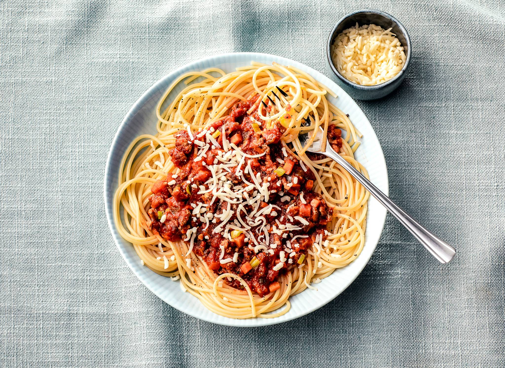

spaghetti-bolognese
Ingredienten
- 250 g winterpeen
- 3 stengels bleekselderij
- 1 prei
- 2 tenen knoflook
- 2 el milde olijfolie
- 300 g half-om-halfgehakt
- 520 g pastasaus basilicum
- 300 g spaghetti
- 100 g geraspte kaas
Bereiding
Schil de winterpeen en snijd in kleine stukjes van een ½ cm. Halveer de bleekselderij in de lengte en snijd in stukjes van een ½ cm. Halveer de prei, was onder koud stromend water en snijd fijn. Snipper de ui en snijd de knoflook fijn.
Verhit de olie in een hapjespan en bak de peen, bleekselderij, prei, ui, knoflook, peper en zout 8 min. op middelhoog vuur. Roer regelmatig. Voeg het gehakt toe en bak 5 min. mee. Roer regelmatig. Voeg de pastasaus toe en stoof 10 min. op laag vuur met de deksel op de pan.
Kook ondertussen de spaghetti volgens de aanwijzingen op de verpakking beetgaar. Giet de pasta af en verdeel over diepe borden. Schep de saus erop en bestrooi met de kaas.